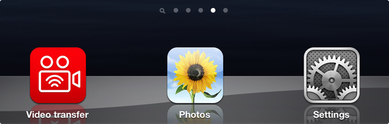
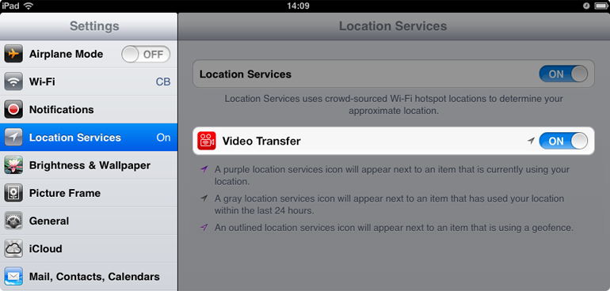

No access to your photos
Please follow this guide to allow Video Transfer to read your photos:
Settings
Location Services
Video Transfer [ON]
1. Launch
Settings
app

2. Select
Location Services
and set
Video Transfer
switch to be turned
ON
.

Contact us for support
team@capablebits.com